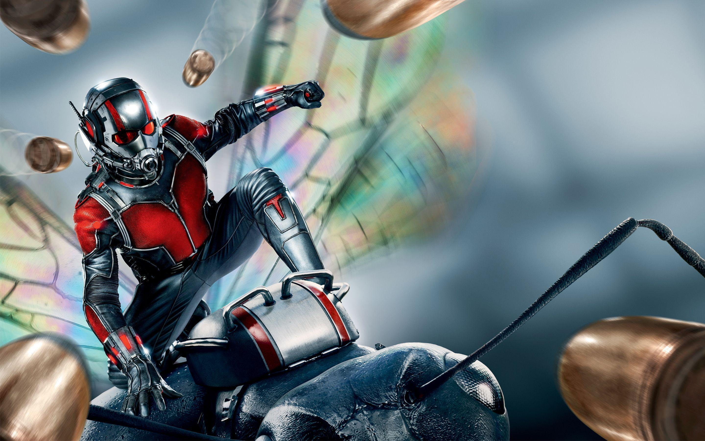
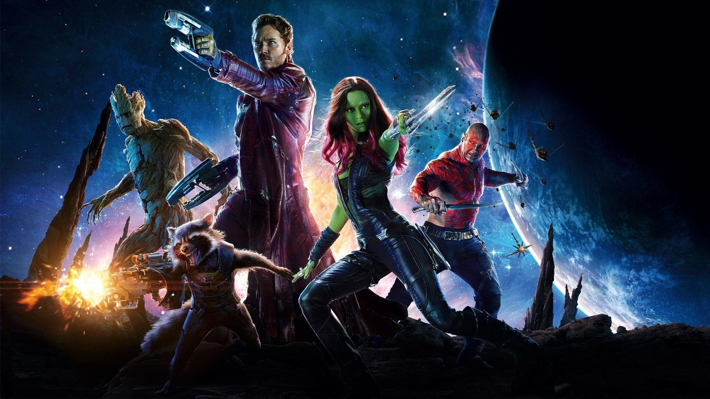

Phase Two of the Marvel Cinematic Universe (MCU) is a series of American superhero films produced by Marvel Studios based on characters that appear in publications by Marvel Comics. The phase began in 2013 with the release of Iron Man 3 and concluded in 2015 with the release of Ant-Man. It includes the crossover film Avengers: Age of Ultron, also released in 2015. Kevin Feige produced every film in the phase. The six films of the phase grossed over $5.2 billion at the global box office and received generally positive critical and public response. Chris Evans appeared the most in the phase, starring or making cameo appearances in four of the Phase Two films. Marvel Studios created two more short films for their Marvel One-Shots program to expand the MCU, while each of the feature films received tie-in comic books. Iron Man 3, Thor: The Dark World, and Captain America: The Winter Soldier also received video game tie-ins, while Lego Marvel's Avengers was also released, which adapted the storyline of multiple films of the franchise. Phase Two, along with Phase One and Phase Three, make up The Infinity Saga.
Descriptions
Iron Man III (2013)
Plagued with worry and insomnia since saving New York from destruction, Tony Stark (Robert Downey Jr.), now, is more dependent on the suits that give him his Iron Man persona -- so much so that every aspect of his life is affected, including his relationship with Pepper (Gwyneth Paltrow). After a malevolent enemy known as the Mandarin (Ben Kingsley) reduces his personal world to rubble, Tony must rely solely on instinct and ingenuity to avenge his losses and protect the people he loves.
Captain America: The Winter Soldier (2014)
After the cataclysmic events in New York with his fellow Avengers, Steve Rogers, aka Captain America (Chris Evans), lives in the nation's capital as he tries to adjust to modern times. An attack on a S.H.I.E.L.D. colleague throws Rogers into a web of intrigue that places the whole world at risk. Joining forces with the Black Widow (Scarlett Johansson) and a new ally, the Falcon, Rogers struggles to expose an ever-widening conspiracy, but he and his team soon come up against an unexpected enemy.
Thor: The Dark World (2013)
In ancient times, the gods of Asgard fought and won a war against an evil race known as the Dark Elves. The survivors were neutralized, and their ultimate weapon -- the Aether -- was buried in a secret location. Hundreds of years later, Jane Foster (Natalie Portman) finds the Aether and becomes its host, forcing Thor (Chris Hemsworth) to bring her to Asgard before Dark Elf Malekith (Christopher Eccleston) captures her and uses the weapon to destroy the Nine Realms -- including Earth.
Avengers Age Of Ultron (2015)
When Tony Stark (Robert Downey Jr.) jump-starts a dormant peacekeeping program, things go terribly awry, forcing him, Thor (Chris Hemsworth), the Incredible Hulk (Mark Ruffalo) and the rest of the Avengers to reassemble. As the fate of Earth hangs in the balance, the team is put to the ultimate test as they battle Ultron, a technological terror hell-bent on human extinction. Along the way, they encounter two mysterious and powerful newcomers, Pietro and Wanda Maximoff.
Ant-Man (2015)

Forced out of his own company by former protégé Darren Cross, Dr. Hank Pym (Michael Douglas) recruits the talents of Scott Lang (Paul Rudd), a master thief just released from prison. Lang becomes Ant-Man, trained by Pym and armed with a suit that allows him to shrink in size, possess superhuman strength and control an army of ants. The miniature hero must use his new skills to prevent Cross, also known as Yellowjacket, from perfecting the same technology and using it as a weapon for evil.
Guardians Of The Galaxy (2014)

Brash space adventurer Peter Quill (Chris Pratt) finds himself the quarry of relentless bounty hunters after he steals an orb coveted by Ronan, a powerful villain. To evade Ronan, Quill is forced into an uneasy truce with four disparate misfits: gun-toting Rocket Raccoon, treelike-humanoid Groot, enigmatic Gamora, and vengeance-driven Drax the Destroyer. But when he discovers the orb's true power and the cosmic threat it poses, Quill must rally his ragtag group to save the universe.
Ratings
Movie
Year
Rating
Iron Man III
2013
79
Captain America: The Winter Soldier
2014
90
Thor: The Dark World
2013
66
Avengers The Age Of Ultron
2015
76
Ant-Man
2015
83
Guardians Of The Galaxy
2014
92
Total Rating: 81
I enjoyed watching the second phase of the MCU as it continued the stories of the characters from the last phase. It had gems like winter soldier where it explained what happened to Bucky after the first movie. It also showed new characters from GOTG and Ant-Man